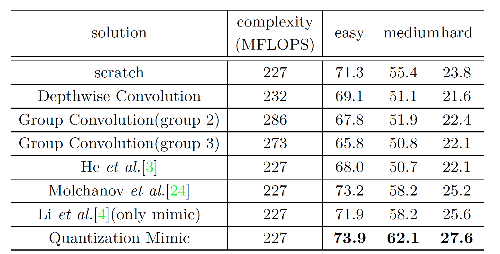

Quantization Mimic: Towards Very Tiny CNN for Object Detection
条评论URL:https://arxiv.org/pdf/1805.02152.pdf
关于模型压缩的论文，论文致力于研究更加小型化的模型，论文定义“Very Tiny”为压缩模型的每一层channel数是原来模型的1/16或更小.从论文的标题也可以看出，论文提出的方法是结合目前比较常见的模型小型化方式：quantization 和 mimic。具体的模型结构在论文中给出了比较通俗的图例：
具体：
- 训练标准的大模型，论文中实验了R-FCN和Faster R-CNN两个网络模型。然后利用论文定义的量化函数Q将大模型转化成量化模型。

公式中的三个参数α、β、γ取自D序列 , 其中s就是均匀量化的步长。函数Q在论文中说的比较不清楚，实际上参考论文中给出的示意图会比较好理解，如果在图例上以（0，0）为原点标上x, y轴看上去会比较直观。取s=1，α = 0、β = 1、γ = 2，那么对于0.5<x<1.5, Q(x) = 1， 然后再取α = 1、β = 2、γ = 3…依次可以得到论文中的图例。
, 其中s就是均匀量化的步长。函数Q在论文中说的比较不清楚，实际上参考论文中给出的示意图会比较好理解，如果在图例上以（0，0）为原点标上x, y轴看上去会比较直观。取s=1，α = 0、β = 1、γ = 2，那么对于0.5<x<1.5, Q(x) = 1， 然后再取α = 1、β = 2、γ = 3…依次可以得到论文中的图例。 - 至于论文中的mimic部分，沿用之前曾阅读的一篇CVPR2017的论文《Mimicking Very Efficient Network for Object Detection》，利用Feature Map Mimic Learning来训练小模型，整个模型的损失函数如下：

Lm为mimic loss，其实就是两个模型feature map的L2 loss，L中的前两个Loss分别是RPN的cls和reg loss，后两个则是R-FCN或者Faster R-CNN cls和reg loss。 - 为了小模型能更好的从量化后的大模型中学习，论文对小模型也进行了量化，从模型的结构示意图中可以直观的看到。与其他的模型小型化方法在Wider Face数据集上的比较，可以看到Quantization Mimic效果还是比较明显的。
